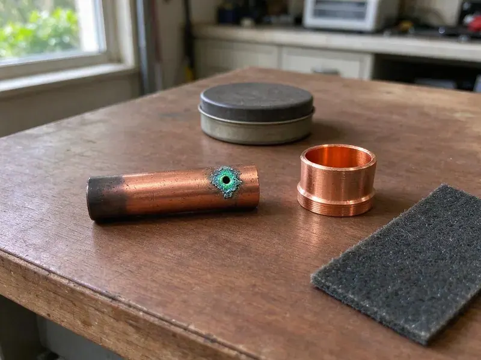

Septic Tank Repair in Mansfield, OH
Sewage smell in the yard or a toilet that will not flush? HRL Plumbing repairs septic tanks in Mansfield, OH and tells you what failed before we fix it.
- Upfront Quotes
- Warrantied Repairs
- Workmanship Warranty
- Backup Response
Sewage Backing Up in Mansfield, OH? Call Us.
A slow drain this week can be a flooded field next month, so get the system checked by HRL Plumbing.
Fixing Septic Systems for Mansfield, OH Homeowners
Odors you cannot place, a lawn that stays wet, a toilet that gurgles, an alarm that chirps at two in the morning. We take these calls every week around Mansfield, and each one has a short list of likely causes. A sewer camera and a probe rod usually find the problem in under an hour. Most are fixable.
Some of what we do:
- Effluent pump and float testing
- Finding and sealing tank cracks
- Camera inspection of the line from house to tank

Additional Plumbing Repair Services in Mansfield, OH
We offer expert plumbing repair services across Mansfield, OH to stop leaks, clear blockages, and keep every fixture working the way it should.


Customers
Why Choose HRL Plumbing for Septic Tank Repair in Mansfield, OH?
We fix the cause, not the symptom. A pump-out on a tank with a snapped inlet tee only buys a few weeks, so the tee gets checked before any pumping. The tee check takes ten minutes.
- Local Ground Know-How, We have dug in the soils around Mansfield for years and know which repairs hold up in them.
- Side-by-Side Options, When there is more than one fix, you see each option with a price next to it.
- Permit Handling, We file the permit paperwork with the local health department when a repair needs approval.
Citywide Coverage
From the edge of town to the county line, our crews reach septic systems on paved roads and dirt ones. Rural calls get the same response time we give in town. There is no trip surcharge inside our usual service area. Mud season too.
Experienced Team
Two decades in this trade teaches you what a tank looks like a year or two before it fails for good. Our lead techs have seen thousands of them, including pumped and pressure-dosed systems. Hard clay does not slow them much.
Safety-First Approach
Our repairs follow the on-site wastewater rules in Ohio and every permit condition the local health department puts on the job. We keep sewage out of storm drains and ditches during the work. Pumped waste goes to a licensed disposal site, and we keep the manifest. Records stay on file.
Trusted Certified Mansfield Plumbing Services Professionals
At HRL Plumbing, we take pride in licensed, certified plumbing services throughout Mansfield, OH. Those papers on the wall mean something. Every repair, install and maintenance visit follows strict safety and quality rules, and the plumbers doing the work carry recognized industry credentials.
Call Us Now PHCC Plumbing Contractor Recognition
PHCC Plumbing Contractor Recognition Better Business Bureau (BBB) Accreditation
Better Business Bureau (BBB) Accreditation Angi Certified Pro
Angi Certified Pro ISO 9001 Quality Management Certification
ISO 9001 Quality Management CertificationSeptic Tank Repair Work We Do in Mansfield, OH
Inlet and Outlet Baffle Replacement in Mansfield, OH
Baffles hold back the scum layer on top and the sludge on the bottom so only clear effluent leaves the tank. Concrete ones get eaten by sulfuric acid from sewer gas and eventually fall off into the tank. With no outlet baffle, sludge flows right out to the leach lines. We replace them with PVC sanitary tees. Usually a short job.

Septic Code and Permit Work in Mansfield, OH
New tanks and new fields need a permit from the local health authority in most of the country, along with any change to the system's layout. Our office prepares the site sketch and submits the permit, then book the inspector before anything is covered. Small fixes like a tee usually skip the permit. The inspector's sign-off goes in your file.
Septic Repair for Businesses in Mansfield, OH
Daycares and small shops on septic put more flow through the tank, more often, than a typical three-bedroom house with four people in it. Grease from a kitchen and paper towels from restrooms are the usual troublemakers. Our fix often includes a bigger effluent filter and a pumping schedule tied to real use. Repairs get scheduled around your hours.
Effluent Pump Replacement in Mansfield, OH
Effluent pumps in a dosing chamber last roughly 8 to 15 years, and they usually quit without much warning at all. Humming with no flow points to a jammed impeller or a failed capacitor. Our tech pulls the old unit and checks the discharge before the new one goes in. Floats get replaced at the same time.
Repair Versus Replace in Mansfield, OH
Most septic systems that fail can be repaired for a fraction of the cost of a new one. You see the repair and the replacement priced next to each other, and we tell you which one we would pick for our own house. A new field is sometimes the right call. Often it is not.
Leach Field Restoration in Mansfield, OH
Before we condemn a leach field, we open the distribution box and look at how evenly it splits the flow. A box that has settled or cracked can push all the effluent into a single trench. Leveling or replacing the box often brings the field back. Some fields are past saving. For those, we explain the design and permit steps.
Commercial Septic Repair in Mansfield, OH
Churches and small offices on septic run more water through the tank than any house, and grease from a kitchen makes it worse. Repairs get sized to real daily flow instead of house numbers. Grease interceptors and lift stations are part of it. Downtime costs you, so we schedule around open hours.

Septic Alarm Troubleshooting in Mansfield
A septic alarm sounding is the system's way of saying the water is too high in the pump chamber or the aerobic unit. Press the silence button and cut back on water. Our tech confirms the pump runs and looks for a float snagged on its cord. A tripped breaker is the cheapest answer.
Nearby Septic Tank Repair for Mansfield, OH
Tree roots and shifting clay often break into older clay or cast iron sewer laterals, leading to slow drains and backups. Our crew works with that ground on every repair. Bedding and trench depth get matched to the soil we actually dig into, not what a textbook says. A test pit often comes first.
Looking for septic repair near you usually means something is already wrong. Tell the dispatcher what you see and hear, because a gurgling drain and a chirping alarm point to two different parts. The right parts come with the tech.
HRL Plumbing at a Glance
- Fully licensed plumbing team covering Mansfield, OH
- Same-day appointments and 24/7 emergency response
- Upfront, flat-rate pricing before work begins
- 4.9-star rated by 673+ Ohio customers
Mansfield Map
Mansfield Information
- Population
- 47,711
- Area codes
- 419/567/330
- Service area
- Mansfield and communities within 40 miles
- Nearby
- Elyria, Newark, Lorain, Dublin
Tree roots and shifting clay often crack older clay or cast iron sewer laterals, leading to slow drains and backups. The soil under the field sets how long it will keep taking water, so we check the field along with the tank in Mansfield, OH.
Expert Services
Reach out to HRL Plumbing for reliable plumbing work done by licensed pros in Mansfield, OH.
Our Specialized Plumbing Services in Mansfield, OH
At HRL Plumbing, we handle the full list of plumbing services across Mansfield, OH. From leak detection to full system installs, our team works fast and charges fair prices on homes and commercial properties alike. Take a look at our core services below:


What Happens When We Fix Your Septic System in Mansfield, OH
Every septic job at HRL Plumbing follows the same three steps, so nothing catches you off guard.
Schedule a Visit
Reach HRL Plumbing at (740) 449-7505 and we book a window that fits your day. Emergencies go to the front of the line.
Camera and Diagnosis
At your Mansfield home, we camera the lines and probe the field if needed. You see the footage.
Fix and Close Up
We explain the problem, give you a written price and do the repair to local code. Lids go back on locked down.
Frequently Asked Questions About Septic Tank Repair in Mansfield
Small repairs like a broken tee or a stuck float usually run $300 to $700. An effluent pump with new floats typically costs $900 to $2,000, and replacing a drain field often runs $5,000 to $15,000 or higher, based on soil and size. You get the number after we diagnose it.
Major work usually does, such as replacing the tank or the drain field, and the local health department issues it. Our office files the application and books the inspector. A tee swap or a new float usually goes without a permit.
Tee and pump repairs take two to four hours. Digging up and fixing a section of line is usually a full day, and field work can run several days when an inspector has to sign off before backfill. We give you the timeline at the diagnosis.
Our usual picks are Zoeller and Liberty effluent pumps, sized to the head and distance from the pump chamber to the field. We pair every pump with new floats and a union for easy service. The high water alarm gets wired on its own circuit. Goulds on request.
Rotten-egg odor near the lid or the field is the giveaway most people notice first. Inside, toilets flush slowly and the tub gurgles. Outside, you may see soggy ground or standing water over the trenches even after a full week or more of dry weather. Backups into the lowest drain come last.
Our workmanship on every repair, plus the manufacturer's warranty on new pumps and alarms. The exact terms are printed on your invoice. Should a part we installed quit early, we handle the claim with the supplier so you do not have to chase it.
Pump the tank every three to five years, sooner if you run a garbage disposal. Do a load or two a day rather than all the wash on one day, because a field can only take so much water at once. Keep grease and wipes out of the drains. Keep cars off the field.
It depends on where you live, since sale inspections are set by state law and by the local health department in each area. Septic systems are common across rural Ohio, and they need regular pumping and inspection to keep working properly. Lenders often ask for one anyway. Anything the inspector flags, we can repair and document for the buyer.
Hear From Customers Who Hired Our Plumbing Experts

Rachel N.
Hard water was leaving white crust on every faucet and our dishwasher was struggling. The tech tested the water, recommended a softener sized for a family of five, and installed it with a bypass valve in one afternoon. The spots on our glasses are gone.
Water Softener · Dublin, OHEmily R.
The shutoff valve under our kitchen sink snapped off in my hand on a Sunday morning. HRL Plumbing had someone out by early afternoon. He replaced both angle stops with quarter turn valves and showed me where our main shutoff was, which I honestly did not know.
Plumbing Repair · Akron, OHMegan L.
Our upstairs tub drained so slowly that every shower turned into a bath. HRL Plumbing pulled a wad of hair out of the stopper and then snaked the line past the trap. Three months later it still drains fast.
Drain Cleaning · Elyria, OH
Sofia M.
Two new toilets went in during one visit. The tech set them on new wax rings and swapped the old supply lines. He also noticed our bathroom faucet dripping and replaced the cartridge while he was there. No mess left behind.
Toilet Installation · Newark, OH
Carlos V.
Our house still had galvanized pipe, and upstairs the shower was a trickle. The crew repiped everything in PEX over three days and patched every drywall hole before they left. The pressure difference is night and day.
Repiping · Lorain, OHDaniel K.
A pipe burst in the garage ceiling at 11 at night. Someone answered on the second ring, and the plumber was in my driveway about fifty minutes later. He shut off the main, cut out the split section, and had water back on before 2 am.
Emergency Plumbing · Lorain, OH